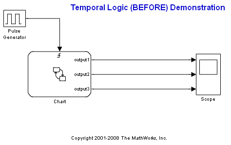
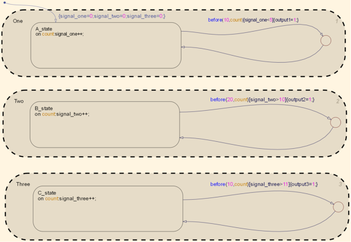

Temporal Logic Using the BEFORE Function
The BEFORE function allows you to execute a transition or an action before a certain number of events occur. In this example, we illustrate the use of the BEFORE function for three different conditions with three different constraints.
In superstate One, two conditions need to be met for the transition out of A_state: signal_one has to be less than 5 before 10 events occur. Since both these conditions are met, the output is set to 1 (after all three parallel states are initialized).
In superstate Two, two different conditions need to be met for the transition out of B_state: signal_two has to be greater than 10 before 20 events occur. These conditions are met later on in the simulation, when signal_two becomes greater than 10.
Finally, in superstate Three, two other conditions need to be met for the transition out of C_state: signal_three has to be greater than 11 before 10 events occur. Since this never occurs, output3 is is never set to 1 and thus remains 0 for whole simulation.
 